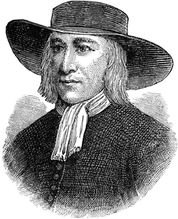
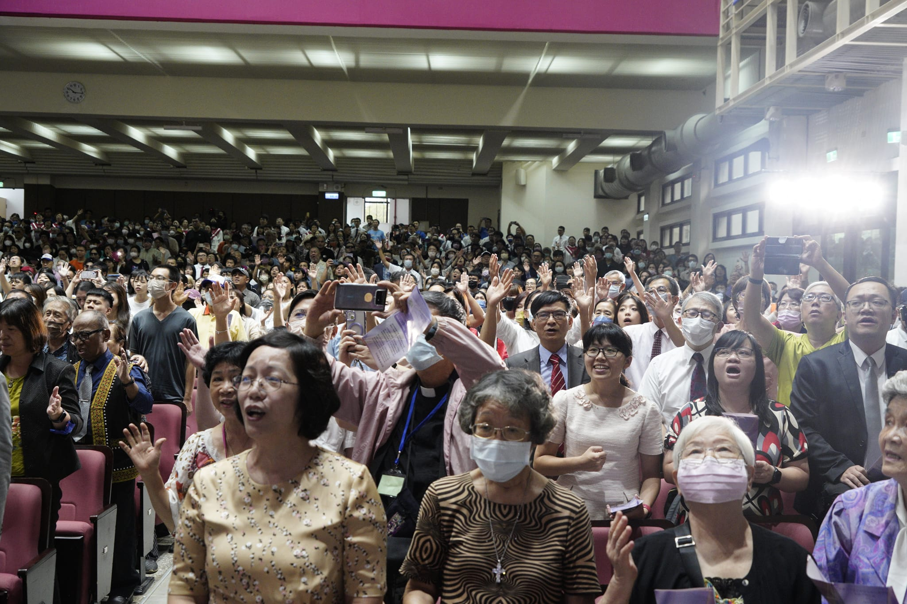

More
貴格
貴格會，很少人瞭解她，一般人只知道她是眾教會團體中的一分子而已，
但是貴格會在世人心目中卻有特殊的地位，甚至有些商品也以「桂格」為標，
比如在台灣大家所熟悉的「桂格」牌產品。
貴格會的精神是從約翰福音十五章14節、馬太福音六章33節以及申命記四章25/31 節而來，因此有人稱我們為朋友會或友誼會，期望我們都遵祂而行。

More
有一位能解決你的問題
創始人喬治‧福克斯生於一六二四年，
年青時他去當製皮鞋學徒，認真學習，
深得老板賞識，漸漸將一切經濟權交給他，別人叫他趁機報虛帳撈一筆，
但無論如何他都不肯，堅持只得當得的，因此被取綽號叫『實在先生』。
當他逐漸有錢以後，內心卻越覺空虛，有許多朋友要找他喝酒，
他覺得浪費而不為，便決定離開那些朋友；
然而他再三找尋都無法滿足心靈裡的需要，失望之際，
有一天在路上走時，聽見有聲音說： 「有一位能解決你的問題」
從此他找到了耶穌，得著了「內在之光」真理的啟示，
從此，一生踏上為真理之光做見證的艱苦路程。

More
貴格會所傳的內容包括：
1️⃣真正的基督徒乃是打開心門接納耶穌者。
因為他知道在教會裡的不全是基督徒，
乃是打開心門接納耶穌的人才是基督徒。
2️⃣人人在神面前是平等的，不論社會地位、階級都是罪人 。
3️⃣基督徒每一句話都是實在的，反對假冒偽善。
4️⃣唯有耶穌才能拯救社會，並且告訴人們：
「你在社會上如果有影響力，則更當做個誠實人」。